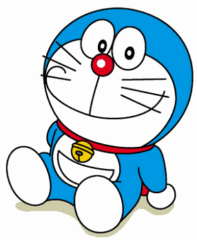
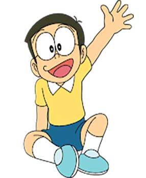
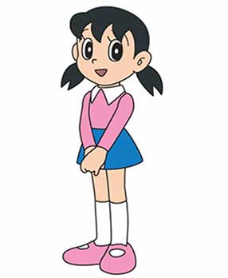
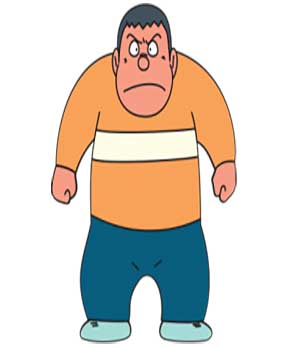
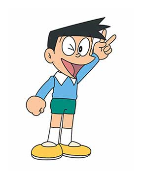
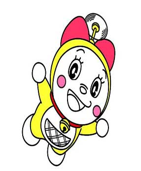

This is the short details on doraemon:
About:
Doraemon is a Japanese manga and anime series and franchise. It was written and illustrated by Fujiko Fujio and Kazuya Tsurumaki. It was started in a children’s magazine in 1969. Doraemon is the name of a robot cat that came from the future to help a boy named Nobita Nobi. Doraemon is about the life of Nobita Nobi. In a typical story Doramon uses a gadget to solve a problem for Nobita, but Nobita goes too far and ends up being punished and learning a lesson.
Doraemon was turned into an anime television show in 1979. It still is being shown on television. As of 1996, about 100 million comic books have been sold. A Japanese-to-English version of the original called Doraemon: Gadget Cat from the Future was published from 2002. A local translation is published in each Asian country such as Hong Kong, Taiwan, Korea and Vietnam. It is in the United States, Canada, the United Kingdom, and Australia, but it is not as popular as it is in Asia. Doraemon is endorsed by 7-11 in Thailand as a mascot.
Doraemon:

Doraemon is a cat-like robot that came from the 22nd century. He is created for Nobita from the future. Nobita suffered much in his life and Doraemon helped Nobita in every difficulty using various kinds of futuristic tools and gadgets from his 4-dimensional pocket. Doremon changes Nobita’s life.
- First appearance: January 1970
- Created by: Fujiko Fujio
- Voiced by: English
- Mona Marshall (2014–2015)
- Wasabi Mizuta (Doraemon Story of Seasons–present)
- Gender: Male
- Birthday: September 3, 2112, age −91 in reality
- Birthday: September 3, 2112, age −91 in reality
Nobita:

Nobita is considered to be one of the most widely recognizable cartoon characters in the series along with Doraemon. Nobita is the academically dull elementary school student in Tokyo’s Nerima Ward. He wears glasses and usually guided by Doraemon, who functions as his caretaker. His best friend is Shizuka and he likes her and always runs behind her.
- First appearance: December 1969
- Created by: Fujiko Fujio
- Voiced by: English:
- Steven Bednarski (1985),
- Denise Tan (2002-2003),
- Denise Tan (2002-2003),
- Gender: Male
- Birthday:
- August 7, 1961 (1969)
- August 7, 1964 (1973)
- August 7, 1973 (1979)
- August 7, 1999 (2005)
- Hometown: Tokyo, Japan
Shizuka Nobi / Minamoto:

Shizuka is a smart and pretty girl. She is Nobita’s best friend and does not reject Nobita due to his failing grades and constant failures and always encourages him to do better. Shizuka loves animals and keeps two pets at home: a dog and a canary.
- Voiced by:
- Ebisu Masako in 1973
- Nomura Michiko in 1979
- Rei Sakuma in 2000
- Yumi Kakazu in 2005 in the Japanese version
- Cassandra Lee Morris in the English Dub
- Gender: Female
Takeshi (Gian) Goda:

Gian is one of the main characters in the Doraemon franchise. He is known for his large body and his aggressive behavior. Suneo, the sidekick of Gian who always helps him to steal or rob others on most occasions.
- First appeared: All the Way From a Future World (manga)
- Kaneta Kimotsuki (1973)
- Kazuya Tatekabe (1979-March 2005)
- Gender: Male
- Birthdate: June 15th (Gemini)
- Birthdate: June 15th (Gemini)
- Habitat: Tokyo
- Voiced by:
- Kaneta Kimotsuki (1973), Koreyoshi Kurahara (1979 – 1982), Tōru Furuya (1979 – March 2005), Kazuya Tatekabe (1979 – March 2005), Subaru Kimura (2005–present), Kujira (2000; Teen) (Japanese); Gerald Chew (2002-2003), Kaiji Tang (2014-2015) (English).
Suneo Honekawa:

Gian is one of the main characters in the Doraemon franchise. He is known for his large body and his aggressive behavior. Suneo, the sidekick of Gian who always helps him to steal or rob others on most occasions.
- First appeared:
- Manga: Prophecy of Doraemon
- 1979 anime: Dream Town, Nobita Land
- Voiced by:
- Shun Yashiro (1973), Sukekiyo Kameyama (1979 – 1982), Yū Mizushima (1979 – March 2005), Kaneta Kimotsuki (1979 – March 2005), Naoki Tatsuta (stand-in for Kimotsuki), Tomokazu Seki (April 2005 – present) (Japanese); Hossan Leong (2002-2003), Brian Beacock (2014-2015) (English).
- Gender: Male
- Birthdate: 29 February (Pisces)
- Nationality: Japanese
- Habitat: Nerima, Tokyo
Dorami:

Dorami is Doraemon’s younger sister and lives in 22nd-century Tokyo with Sewashi. Dorami likes melonpan and is scared of cockroaches like Nobita’s mom. She savvy in using gadgets.
- First appeared:
- Manga: Chapter 057:Undersea Hiking
- 1979 Anime: Dorami Appeared! Nobita’s Hiking Submarine
- 2005 Anime: Goodbye, Nobita! Doraemon, Goes Back To The Future
- Gender: Female
- Birthdate: 2 December
- Nationality: Japanese
- Habitat: Tokyo